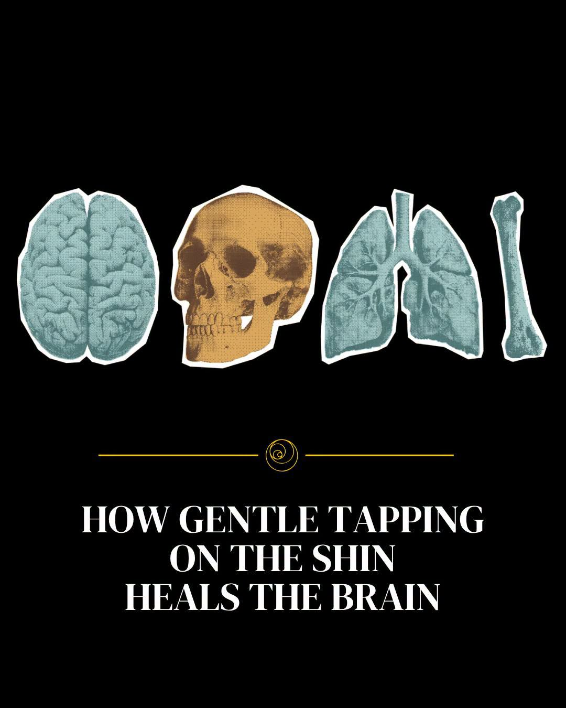

Injuries to the brain accelerate bone healing. This is a little known medical fact.
Amazingly, the opposite seems to be true as well. Injuries to the bones accelerate brain healing— even very mild injuries.
This recent discovery in animals (mice & pigs) may open up a whole new treatment modality for people with brain injuries or neurodegenerative diseases.
Link to journal paper:
Paper · Nat Neurosci · 2026Tibial bone compression promotes recovery after brain injury through osteocyte PIEZO1nature.com
My note:
This might partially explain why heavy weightlifting and resistance training are neuroprotective. It puts stress on the bones. This could be true for certain kinds of cardio that stress the bones, as well, like running.
#brainHS #bonesHD #stemcellsHD #piezo1HD #braininjuryHD #dementiaHD #alzheimersHD #parkinsonsHD #resistancetrainingHD #runningHD #shintappingHD #miceHD #pigsHD
Your brain is talking to your skeleton, and more than you probably realize. For example, doctors have long noticed something odd about people with traumatic brain injuries—their bones heal faster. When some brain cells are damaged, they release vesicles filled with proteins that travel to the bone stem cells and stimulate growth. Naturally, researchers began to wonder: If damaged brains can heal bones, can bones heal damaged brains?
To find out, researchers from Southern Medical University in China flipped the script on TBI-accelerated bone growth. They artificially caused traumatic brain injuries and strokes in the brains of mice and pigs. They then outfitted the brain-damaged animals with electronic devices that would rhythmically tap on their shin bones a couple times a second for five days.
Remarkably, it worked. According to their study recently published in Nature Neuroscience, the tapping reduced brain cell loss, promoted neuron growth, and relieved chronic inflammation. It also increased both animals’ survival time and improved their motor function and ability to navigate mazes, suggesting the process led to less memory loss.
The researchers traced the effects to a relatively large protein in bone cells called PIEZO1. This propeller-shaped protein has three spiral “blades” that curve upward surrounding an ion channel. When pressure is applied, the blades flex down and the ion channel opens, letting in positively charged signalling elements like sodium, potassium, and calcium. In their tests of animals without PIEZO1, the team found none of the healing benefits of shin tapping.
It’s a little strange, but not if you consider that bones act sort of like endocrine organs. They actively regulate mineral levels, secrete a growth factor that acts on other organs, and hormones that can lower blood glucose and boost testosterone. The endocrine system operates via feedback loops, so in a way it would be even weirder if the brain-bone axis only went one way.
But it’s still weird
